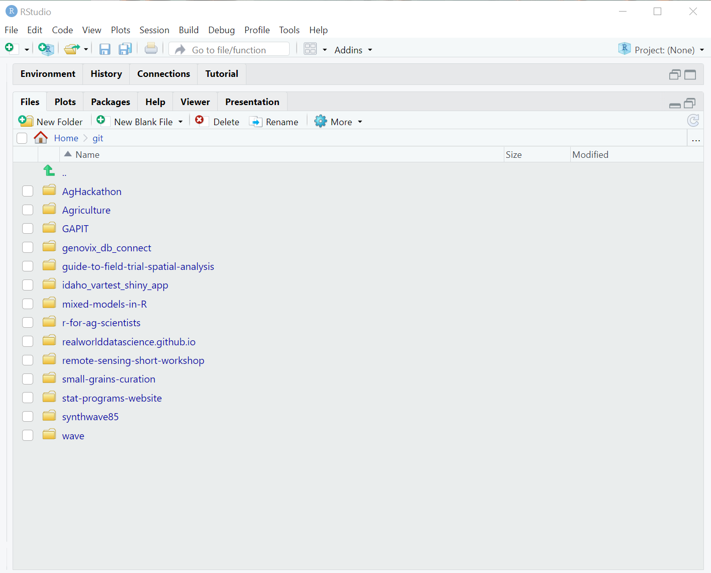
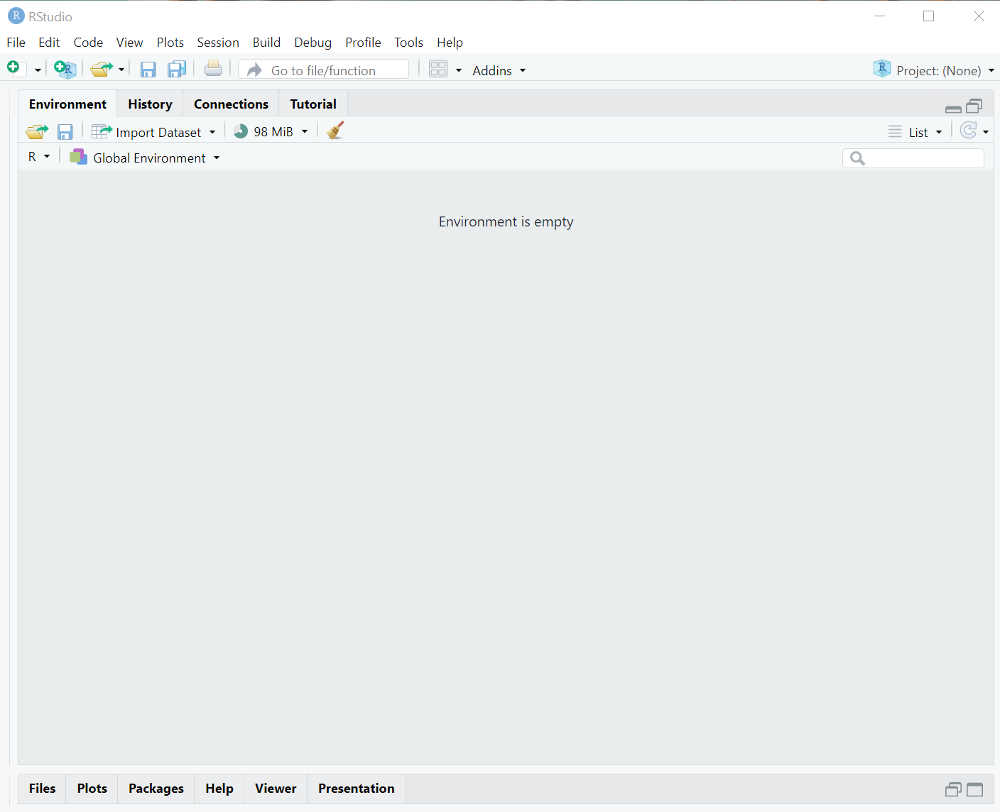
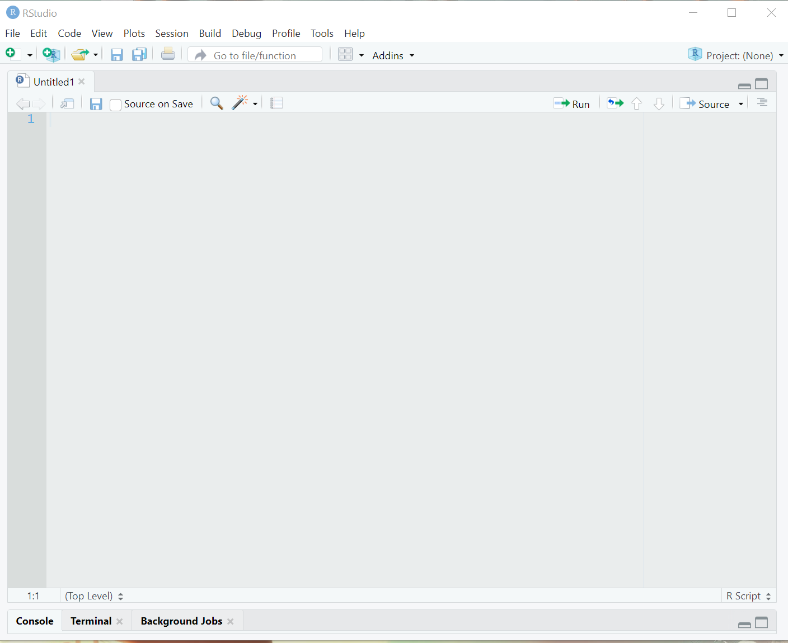

# get Rstudio whole
knitr::include_graphics("images/rstudio_console_pane.png")Lesson 1: Introduction to RStudio
RStudio is more than a graphical user interface for R. It is an integrated development environment (IDE), that is a full service application for supporting software development. It can perform multitudes, so more than most people need. It is the supermarket of R functionality. Like a supermarket, there are parts of RStudio you will visit frequently and parts you will rarely if ever use. After 10+ years of using RStudio on a near daily basis, there are several parts of it that I continue to be unfamiliar with! Ths is okay - clearly, I have not needed those parts. You will come to find what sections youn will need most over time and practice.
Still, it helps to have a guided tour. Let’s dive into this.
The Panes
The Console/Terminal/Background Jobs
knitr::include_graphics("images/rstudio_console_pane.png")
Default location: left or bottom left
| Tab | Function |
|---|---|
| Console | where R commands are actually done |
| Terminal | use a terminal language such as bash or the windows command prompt |
| Background jobs | usual pacakage installation |
| Render | for building markdown or quarto documents (only present when actively rendering) |
In this workshop, we will only be using the Console.
Files/Plots/Packages/Help/Viewer/Presentation
knitr::include_graphics("images/rstudio_file_pane.png")
Default location: bottom right
Probably the most useful pane - we will be here frequently!
| Tab | Function |
|---|---|
| Plots | view plots |
| Files | explore your file system |
| Packages | install, update and load packages |
| Help | helps files & examples |
| Viewer | for previewing websites |
| Presentation | for previewing presentations |
We will not be using the Viewer or Presentations tabs in this workshop.
What are Packages?
These make the world go around in R. All of R consists of packages or libraries that have certain functionality associated with them. Some of are maintained by the R core team, others are maintained by outsiders. All packages are open source and most are a volunteer effort. When you open R, several packages are loaded automatically: base, datasets, graphics, grDevices, methods, stats, utils.
We will talk about package installation and usage later in this course/workshop.
Environment/History/Connections/Build/Git/Tutorial
knitr::include_graphics("images/rstudio_envir_pane.png")
| Tab | Function |
|---|---|
| Environment | objects created and existing in your current R session |
| History | previous R command run |
| Connections | to connect to an external database |
| Build | for building R packages and other large projects |
| Git | only visible if you’ve initialized a git repository |
| Tutorial | tutorials build by Posit (very helpful) |
Our Scripts Pane
knitr::include_graphics("images/rstudio_editor_pane.png")
default location: upper left
These are all the files we create and edit: .R, .Rmd, .txt, …
when we open files from the “Files” pane, this is where it shows up
Learning Recap
At the end of this lesson, you should understand:
- What the different tabs in each of the panes of RStudio do
- What is in each menu item in Rstudio and have a general sense of functionality available